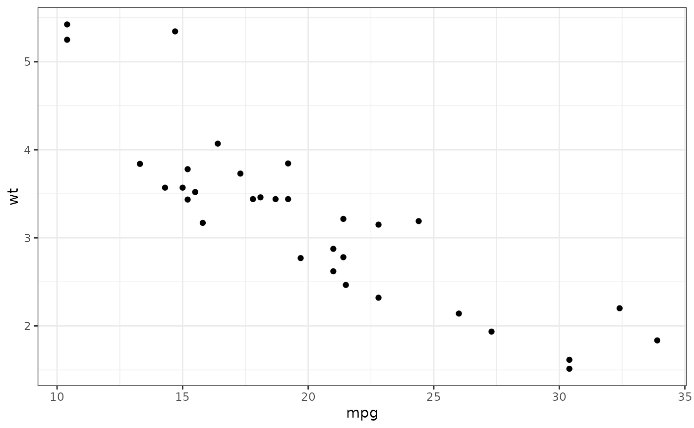
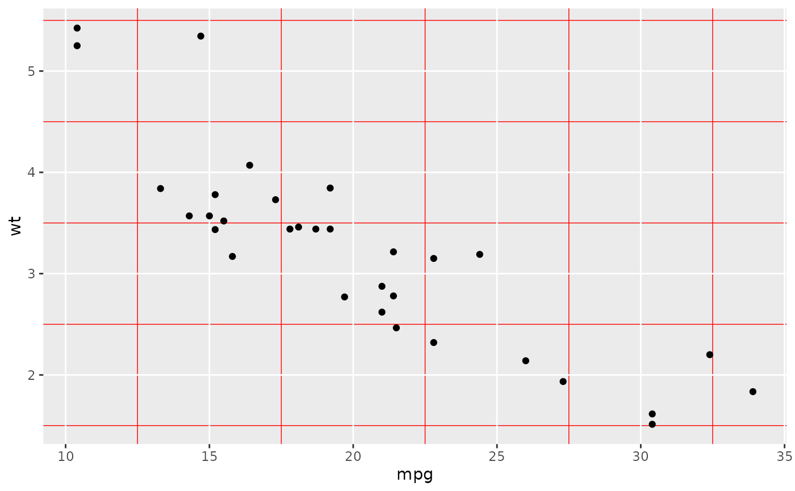
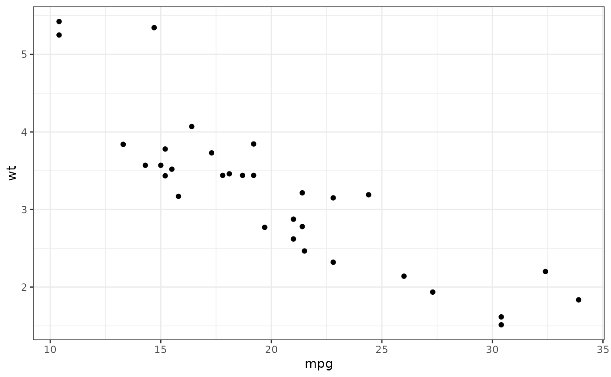
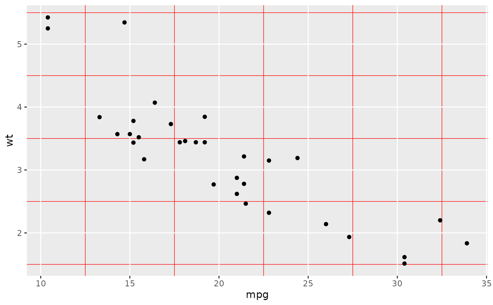
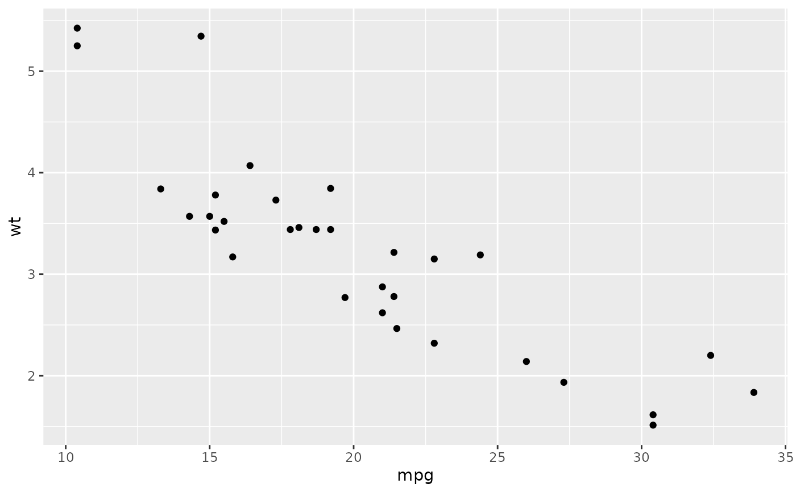
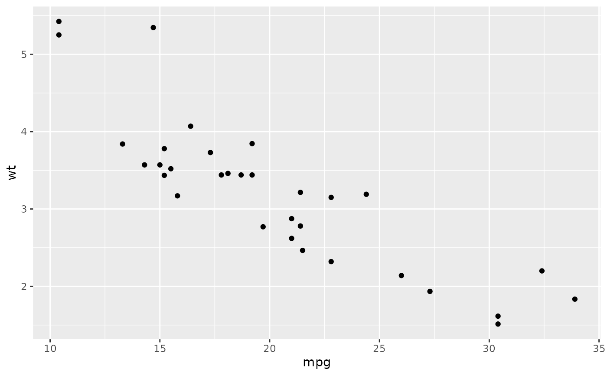

The current/active theme (see theme()) is automatically applied to every
plot you draw. Use get_theme() to get the current theme, and set_theme() to
completely override it. update_theme() and replace_theme() are shorthands for
changing individual elements.
Usage
get_theme()
theme_get()
set_theme(new)
theme_set(new)
update_theme(...)
theme_update(...)
replace_theme(...)
theme_replace(...)
e1 %+replace% e2Value
set_theme(), update_theme(), and replace_theme()
invisibly return the previous theme so you can easily save it, then
later restore it.
Adding on to a theme
+ and %+replace% can be used to modify elements in themes.
+ updates the elements of e1 that differ from elements specified (not
NULL) in e2. Thus this operator can be used to incrementally add or modify
attributes of a ggplot theme.
In contrast, %+replace% replaces the entire element; any element of a
theme not specified in e2 will not be present in the resulting theme (i.e.
NULL). Thus this operator can be used to overwrite an entire theme.
update_theme() uses the + operator, so that any unspecified values in the
theme element will default to the values they are set in the theme.
replace_theme() uses %+replace% to completely replace the element, so any
unspecified values will overwrite the current value in the theme with
NULL.
In summary, the main differences between set_theme(), update_theme(),
and replace_theme() are:
set_theme()completely overrides the current theme.update_theme()modifies a particular element of the current theme using the+operator.replace_theme()modifies a particular element of the current theme using the%+replace%operator.
Examples
p <- ggplot(mtcars, aes(mpg, wt)) +
geom_point()
p
 # Use set_theme() to completely override the current theme.
# update_theme() and replace_theme() are similar except they
# apply directly to the current/active theme.
# update_theme() modifies a particular element of the current theme.
# Here we have the old theme so we can later restore it.
# Note that the theme is applied when the plot is drawn, not
# when it is created.
old <- set_theme(theme_bw())
p

set_theme(old)
update_theme(panel.grid.minor = element_line(colour = "red"))
p

set_theme(old)
replace_theme(panel.grid.minor = element_line(colour = "red"))
p
# Use set_theme() to completely override the current theme.
# update_theme() and replace_theme() are similar except they
# apply directly to the current/active theme.
# update_theme() modifies a particular element of the current theme.
# Here we have the old theme so we can later restore it.
# Note that the theme is applied when the plot is drawn, not
# when it is created.
old <- set_theme(theme_bw())
p

set_theme(old)
update_theme(panel.grid.minor = element_line(colour = "red"))
p

set_theme(old)
replace_theme(panel.grid.minor = element_line(colour = "red"))
p
 set_theme(old)
p

# Modifying theme objects -----------------------------------------
# You can use + and %+replace% to modify a theme object.
# They differ in how they deal with missing arguments in
# the theme elements.
add_el <- theme_grey() +
theme(text = element_text(family = "Times"))
add_el$text
#> List of 11
#> $ family : chr "Times"
#> $ face : chr "plain"
#> $ colour : chr "black"
#> $ size : num 11
#> $ hjust : num 0.5
#> $ vjust : num 0.5
#> $ angle : num 0
#> $ lineheight : num 0.9
#> $ margin : 'margin' num [1:4] 0points 0points 0points 0points
#> ..- attr(*, "unit")= int 8
#> $ debug : logi FALSE
#> $ inherit.blank: logi FALSE
#> - attr(*, "class")= chr [1:2] "element_text" "element"
rep_el <- theme_grey() %+replace%
theme(text = element_text(family = "Times"))
rep_el$text
#> List of 11
#> $ family : chr "Times"
#> $ face : NULL
#> $ colour : NULL
#> $ size : NULL
#> $ hjust : NULL
#> $ vjust : NULL
#> $ angle : NULL
#> $ lineheight : NULL
#> $ margin : NULL
#> $ debug : NULL
#> $ inherit.blank: logi FALSE
#> - attr(*, "class")= chr [1:2] "element_text" "element"
set_theme(old)
p

# Modifying theme objects -----------------------------------------
# You can use + and %+replace% to modify a theme object.
# They differ in how they deal with missing arguments in
# the theme elements.
add_el <- theme_grey() +
theme(text = element_text(family = "Times"))
add_el$text
#> List of 11
#> $ family : chr "Times"
#> $ face : chr "plain"
#> $ colour : chr "black"
#> $ size : num 11
#> $ hjust : num 0.5
#> $ vjust : num 0.5
#> $ angle : num 0
#> $ lineheight : num 0.9
#> $ margin : 'margin' num [1:4] 0points 0points 0points 0points
#> ..- attr(*, "unit")= int 8
#> $ debug : logi FALSE
#> $ inherit.blank: logi FALSE
#> - attr(*, "class")= chr [1:2] "element_text" "element"
rep_el <- theme_grey() %+replace%
theme(text = element_text(family = "Times"))
rep_el$text
#> List of 11
#> $ family : chr "Times"
#> $ face : NULL
#> $ colour : NULL
#> $ size : NULL
#> $ hjust : NULL
#> $ vjust : NULL
#> $ angle : NULL
#> $ lineheight : NULL
#> $ margin : NULL
#> $ debug : NULL
#> $ inherit.blank: logi FALSE
#> - attr(*, "class")= chr [1:2] "element_text" "element"